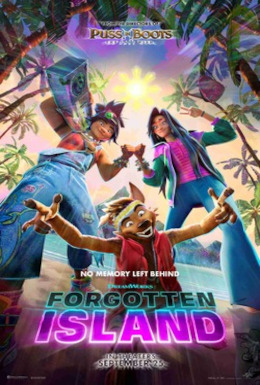

Forgotten Island

Movie Details
Watched: September 27, 2026
My Rating: 4/5 stars
My Review
The visuals in Forgotten Island were amazing! I really liked the different animation styles and how the movie used Filipino mythology. The characters were great too, and those were easily my favorite parts of it.
The story itself was kind of ehh for me, though. I don't think it was nearly as interesting as everything else the movie had going for it. Still, between the animation, characters, and mythology, there was a lot I enjoyed. I'd give it a solid 4 stars.